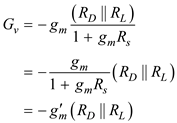
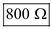
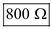

The expression for overall gain of CS amplifier is,
In discrete-circuit amplifiers,  is usually much lower than
is usually much lower than  . So, neglect the resistance,
. So, neglect the resistance,  because of parallel combination.
because of parallel combination.
The expression for overall gain of CS amplifier is,
Calculate the expression for overall gain of CS amplifier  , when is connected in the source lead.
, when is connected in the source lead.

Where,
…… (1)
 and for in equation (1).
and for in equation (1). is.
is.